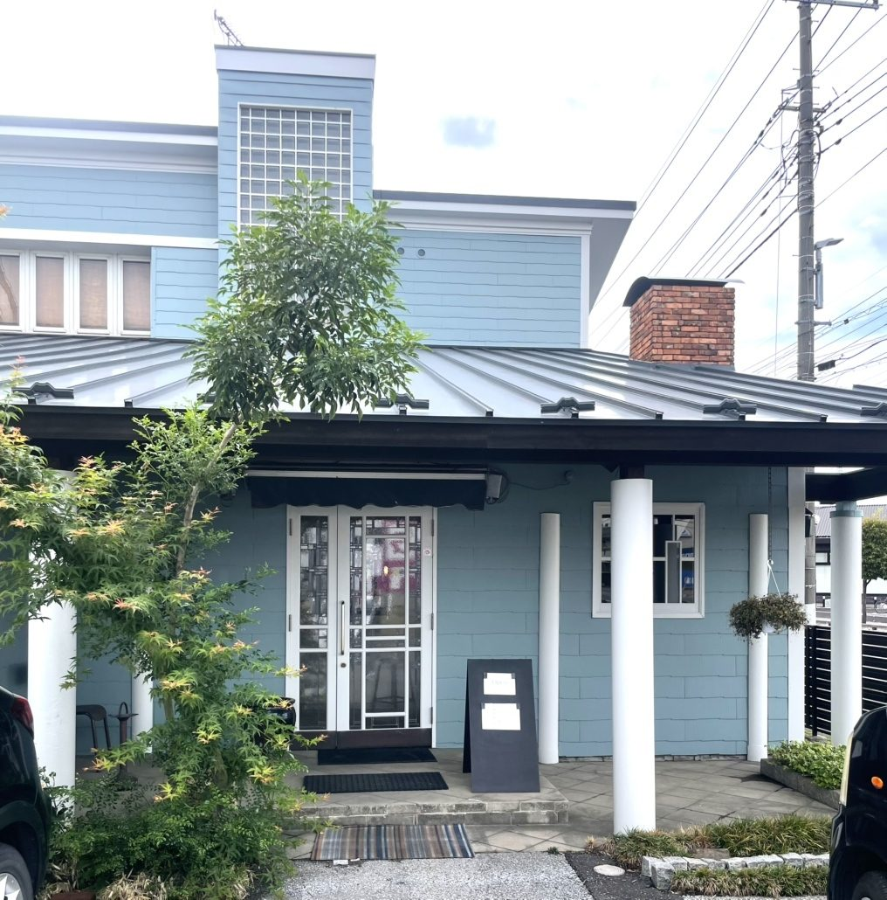
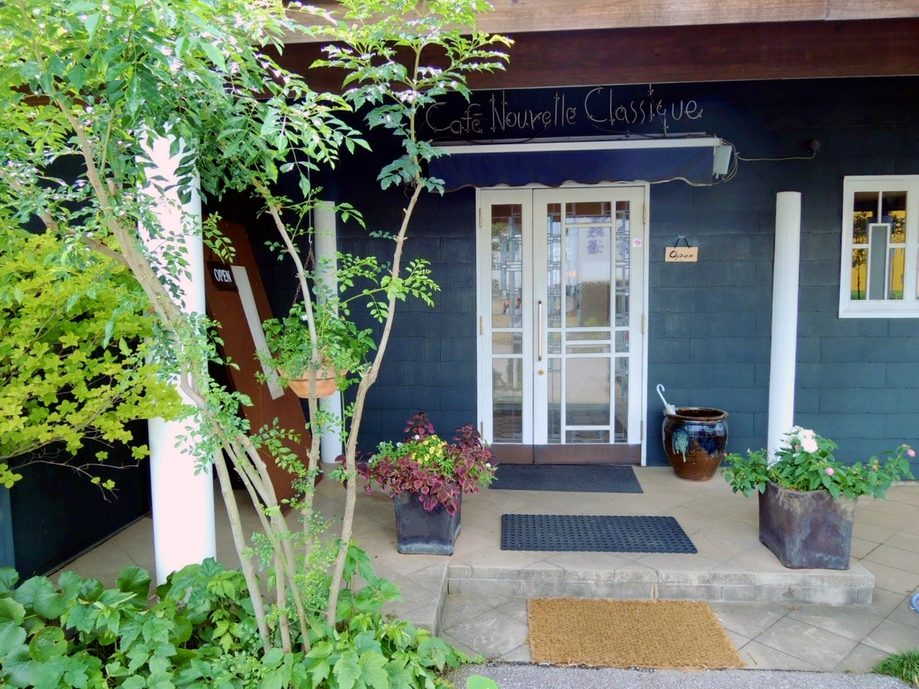
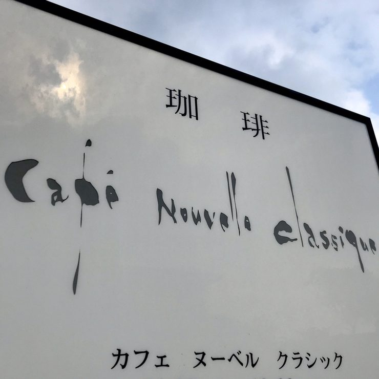

SINCE 1986
上辺見の、水色の建物で
1986年に、この上辺見でお店を開きました。おいしい珈琲と、手づくりの西洋菓子。始めたときからお出ししているものは、変わっておりません。
珈琲は一杯ずつお淹れし、ケーキは毎朝こしらえます。ガラスのケースに並ぶ顔ぶれはその日によって変わりますので、お越しになるたびに違うものを召し上がっていただけます。
お車でお越しの方は、敷地の中に駐車場をご用意しております。どうぞそのままお停めください。


